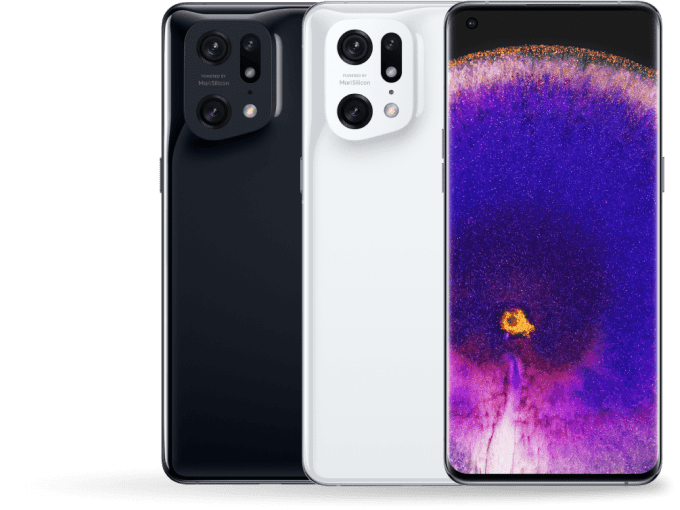
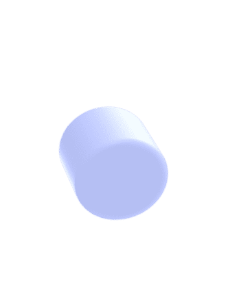

<section class="video__section">
    <div class="container">
        <div class="video__section-wrapper">
            <div class="video__content">
                <h2 class="video__title">
                    Bahan yang sangat awet
                    untuk desain yang terbaik
                </h2>
                <p class="video__text">
                    Kurva ramping OPPO Find X5 Pro didesain dengan bahan keramik yang sangat elegan. Untuk hasil yang terbaik, bagian ponsel dipertajam sebanyak 14 proses yang di mana selama 269 menit untuk mengambil gambar fokus bahkan dengan bentuk kerikil sekalipun.  selama dimungkinkan dengan keramik yang elegan. Untuk menciptakan hasil akhir premium, bodinya dipoles dalam 14 proses selama 269 menit untuk menangkap kehalusan kerikil. Sedangkan kemiringan 75 lereng menawarkan kurva optimal untuk menerangi tubuh di bawah sinar matahari atau bayangan.
                </p>
                
                <div class="video__btns">
                    <a href="#card" class="order__btn">
                        <div class="order__btn-arrow">
                            
                        </div>
                        <span>Lakukan pesanan</span>
                    </a>
                    <a data-fancybox href="https://www.youtube.com/watch?v=tGX584kHkTY" class="video__btn">
                        <div class="video__btn-play">
                            
                        </div>
                        <span>Tonton video</span>
                    </a>
                </div>
                
            </div>
        </div>
    </div>
</section>